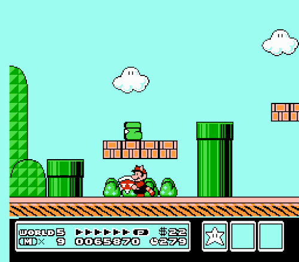
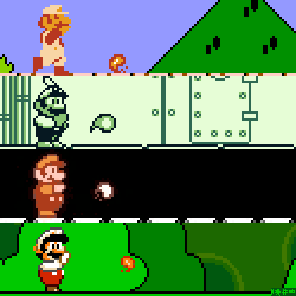

>
Durante este año llegaría el que fue el último juego de Mario para la Famicom de Nintendo: Super Mario Bros 3. El cartucho incluía un chip gráfico especial en su interior que
permitía un desplazamiento diagonal de la pantalla, es decir, el chip permitía tanto
scroll vertical como horizontal al mismo tiempo, algo hasta entonces imposible en la
consola.
<

>
El argumento era simple: Recuperar las varitas mágicas que habían sido robadas
a los siete reyes del Mushroom World por parte de los Koopalings y salvar a la
princesa del malvado Koopa. Con este precepto se desarrollaba un juego que superaba
a los anteriores en cuanto a número de niveles que superar, movimientos y habilidades,
objetos y libertad (se nos daba la posibilidad de movernos por un mapa y
escoger los caminos a seguir).
<